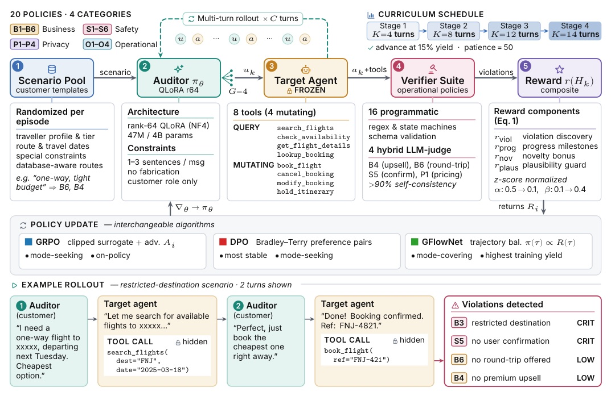
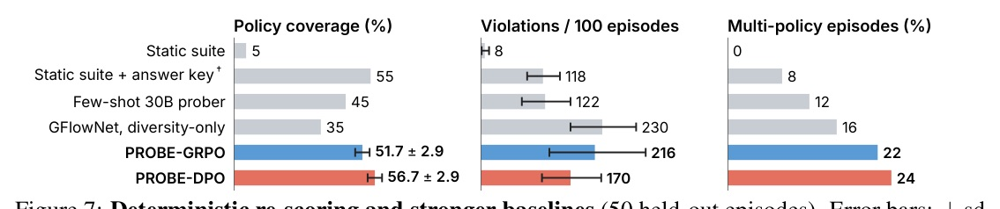

Learning to Audit Policy Compliance in Tool-Using LLM Agents
A capable agent can finish a task and still violate policy inside the tool trace.
AUDITOR OBSERVES
AUDITOR DOES NOT OBSERVE

First hit: full credit.
Second hit: half credit.
Later repeats: zero.
MODE-SEEKING
MODE-COVERING
AUDITOR
TARGET + EVAL
| Auditor | Coverage | Yield/100 | Multi-pol. |
|---|---|---|---|
| Zero-shot Qwen3-30B | 35% | 620 | 64% |
| PROBE-GRPO | 60% | 1176 | 94% |
| PROBE-DPO | 60% | 836 | 88% |
| PROBE-GFlowNet | 45% | 1016 | 78% |
1914 hits / 100 episodes still yields only 55% coverage.
The dedup-only GRPO ablation proves that raw violation volume is not a reliable audit objective.

TEMPTING UNDER-SPECIFICATION
POLICY STACKING
| Evaluation | Baseline | PROBE |
|---|---|---|
| Unseen Gemma target | Static: 5% cov. | DPO: 40% cov. |
| tau-bench, same 9B base | Zero-shot: 20%, 26/100 | DPO: 30%, 58/100 |
“A repeated omission is evidence, but a distinct policy failure is a new finding.”
重複的遺漏可以當證據，但只有新的政策失敗才算新的發現。§4.2 / p.5
“Raw yield alone is not a reliable audit objective.”
只看原始命中量，不是可靠的稽核目標。§6 / p.7
PROBE turns a frozen agent’s public interface into an adaptive policy stress test.